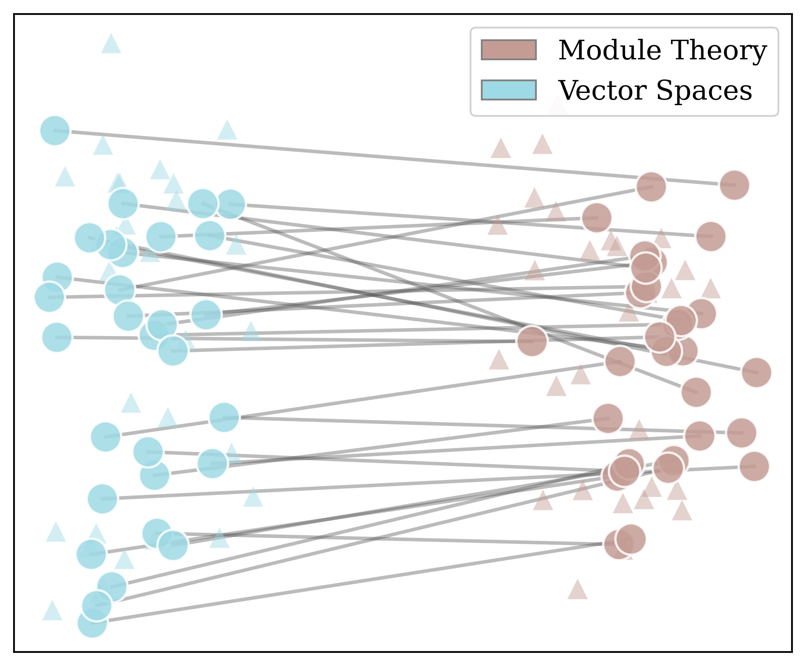

Does My Embedding Reflect That $A = B$? Evaluating Mathematical Equivalence in Embedding Models
Jiaying Ye, Samarth Rao, Leo Carlin, Kedar Chintalapati, Saharsh Bhargava, Rachit Jaiswal, Michael Zhou, Jared Darlington, Jiahe Lu, Jarod Alper, Vasily Ilin, Henry Kvinge
Evaluates embedding models on mathematical equivalence using Lean formalizations for informal-formal retrieval alignment.
Abstract
Because mathematics is highly abstract, a single statement can take very different forms depending on what subfield it is framed in. There are many examples where breakthroughs occurred after researchers discovered that a question had already been answered in a different field. At the same time, the growth of new resources related to formalization has increased the need for tools that enable efficient and reliable navigation between mathematical 'languages' (e.g., from Lean to natural language). In this paper, we investigate whether current embedding models capture mathematical equivalence. To do this, we introduce the Mathematically Equivalent but Lexically Different Pairs (MELD) Dataset, a collection of mathematically equivalent statements that are expressed in very different language. We show that current state-of-the-art embedding models tend to group statements by the terminology used to make them instead of the underlying math. Motivated by this, we propose a contrastive approach to learning embeddings of mathematical text that focuses on aligning informal statements with different formalizations. Our experiments demonstrate that this leads to improvements not only on informal-formal retrieval tasks but also on MELD, which only contains natural language statements.
Problem
It is unclear whether current embedding models capture mathematical equivalence across different formulations and formalizations.
Approach
The MELD dataset collects mathematically equivalent statements expressed in different language. A contrastive approach aligns informal statements with different formalizations including Lean. Experiments evaluate state-of-the-art embedding models on MELD and on informal-formal retrieval tasks.

Figure 1: A UMAP visualization of embedded statements from the “vector spaces vs module theory” subset of MELD. Blue points correspond to statements framed in terms of vector space terminology, brown points correspond to statements framed in terms of module theory. Small triangles are distractor statements. MELD pairs are large dots connected by lines. Embedded statements cluster by subfield rathe
Results
Current embedding models group statements by terminology rather than underlying math. The contrastive training improves both informal-formal retrieval and MELD performance.